STATION MODES
Four sessions a day, sectors that stay put, a shared throwaway wall, and page changes
without the flash. 25 September 2026 · branch station/modes-20260925 · code at 7a2182c ·
nothing pushed, nothing deployed.
"It's open for discussion if we establish like the pre-market view and during-market view and after-market view and an overnight."
"There is sectors that are more important in market cap, way more important. I don't know if I would rotate all of them."
"When I see something on Scintilla, this is a good place to drop things and they're safe."
"I am seeing weird behavior between screens… there's a little glitch happening."
WHAT CHANGED, IN ONE SCREEN
- Four sessions instead of two. The rotation now knows overnight, pre-market, market and after-market (New York time). The intraday pages come back at 04:00 instead of 09:30, and the weekly pages rotate only overnight.
- SECTORS keeps your six on screen. XLK XLI XLC XLF XLY XLE never leave. The other five take turns, two at a time, in two extra slots.
- HISTORY is gone from the pages and the menu. A browser that remembered it opens MACRO · DAY.
- SCRATCH is shared. What you type there is saved to the database and appears on every Station window. A new SAVE AS RADAR button sits beside SAVE AS TARGETS.
- The glitch had a cause, and it is fixed for the usual case. Every page change was throwing away all eight chart pages and redrawing them from nothing, so the whole wall went dark for about a sixth of a second. Now each chart just switches symbol.
- CHARTS ONLY was checked on the live Station: it does exactly what it should. Nothing needed fixing.
1 · THE FOUR SESSIONS
A 24-hour day in New York time. Monday to Friday follow this strip. Saturday and Sunday are overnight all day. The Station checks the clock every time it moves to the next page, so the lap changes at 04:00 and 20:00, and the leaders at 09:30 and 16:30. It never needs a reload.
OVERNIGHT · 20:00–04:00 · 15 pages
1WINDEXES · WEEK1WMACRO · WEEK3DTARGETS3DSECTORS3DSPY + QQQ3DMAG 73DAI 1 · CHIPS3DAI 2 · MEMORY, RACKS3DAI 3 · POWER, CLOUDS3DOTHER3DBLUE CHIP1DSPY + QQQ · DAY1DOTHER INDEXES · DAY1DMACRO · DAY1DTARGETS · DAY
PRE-MARKET · 04:00–09:30 · 17 pages
3DTARGETS3DSECTORS3DSPY + QQQ3DMAG 73DAI 1 · CHIPS3DAI 2 · MEMORY, RACKS3DAI 3 · POWER, CLOUDS3DOTHER3DBLUE CHIP1DSPY + QQQ · DAY1DOTHER INDEXES · DAY1DMACRO · DAY1DTARGETS · DAY4hMACRO · 4H4hINTRADAY · 4H1hINTRADAY · 1H30mINTRADAY · 30M
MARKET · 09:30–16:30 · 17 pages
3DTARGETS3DSECTORS3DSPY + QQQ3DMAG 73DAI 1 · CHIPS3DAI 2 · MEMORY, RACKS3DAI 3 · POWER, CLOUDS3DOTHER3DBLUE CHIP1DSPY + QQQ · DAY1DOTHER INDEXES · DAY1DMACRO · DAY1DTARGETS · DAY4hMACRO · 4H4hINTRADAY · 4H1hINTRADAY · 1H30mINTRADAY · 30M
AFTER-MARKET · 16:30–20:00 · 17 pages
3DTARGETS3DSECTORS3DSPY + QQQ3DMAG 73DAI 1 · CHIPS3DAI 2 · MEMORY, RACKS3DAI 3 · POWER, CLOUDS3DOTHER3DBLUE CHIP1DSPY + QQQ · DAY1DOTHER INDEXES · DAY1DMACRO · DAY1DTARGETS · DAY4hMACRO · 4H4hINTRADAY · 4H1hINTRADAY · 1H30mINTRADAY · 30M
Who leads: SPY and QQQ during the market session only. ES and NQ futures lead overnight, pre-market and after-market. The weekly pages (INDEXES · WEEK, MACRO · WEEK) rotate only overnight. The intraday pages (MACRO · 4H, INTRADAY · 4H, INTRADAY · 1H, INTRADAY · 30M) rotate from 04:00 to 20:00. Every page stays in the menu and the rail whatever the time; the session only decides what auto-rotate walks through.
16:30, not 16:00: SPY's 30-minute volume falls from 5.9M in the 16:00 bar to 195k at 16:30, so the SPY/QQQ lead holds until then. That rule was already in place; the four sessions keep it.
2 · SECTORS
An eight-chart page. Slots 1–6 are your six, in your order, on every visit. Slots 7–8 take the other five sectors two at a time. Each of the five is on screen twice in every five visits, so none is left out.
| visit | slots 1–6 (always) | slots 7–8 (rotating) |
|---|---|---|
| visit 1 | XLK XLI XLC XLF XLY XLE | XLP · XLV |
| visit 2 | XLK XLI XLC XLF XLY XLE | XLU · XLRE |
| visit 3 | XLK XLI XLC XLF XLY XLE | XLB · XLP |
| visit 4 | XLK XLI XLC XLF XLY XLE | XLV · XLU |
| visit 5 | XLK XLI XLC XLF XLY XLE | XLRE · XLB |
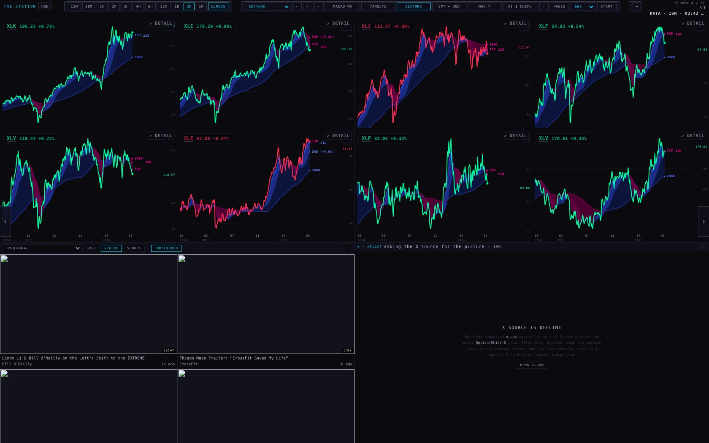
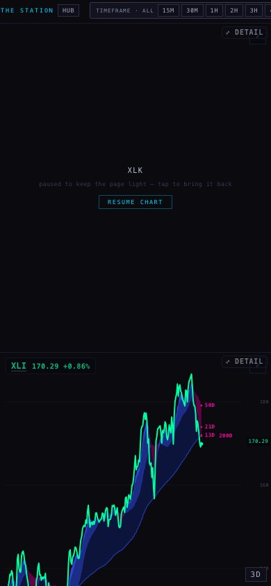
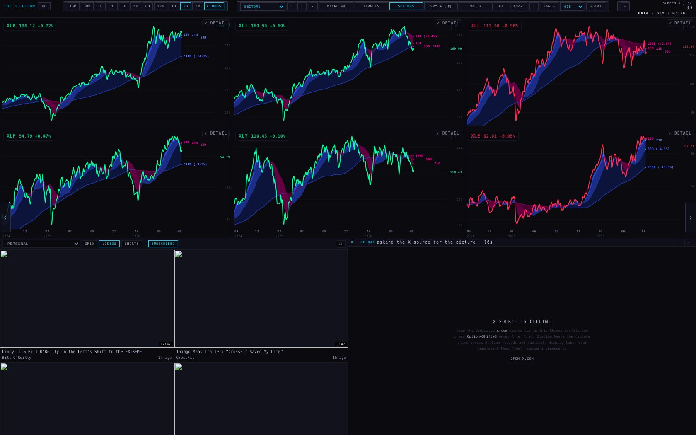
3 · HISTORY, REMOVED
The HISTORY page, its menu entry and its 6,000-bar setting are gone; the Station now has 31 pages. An old bookmark or a browser that last sat on HISTORY
opens MACRO · DAY (macro1D), the daily page with three of its six names (gold, the 10-year, crude).
The chart's ability to ask for more bars (?bars=) stays in place, unused, because it is harmless and already tested.
4 · SCRATCH, SHARED ACROSS DEVICES
The eight SCRATCH slots now live in the database table public.station_lists, under list scratch, positions 1–8.
- Reading: when the Station opens, and again every time you go to SCRATCH. If the table has names, the table wins over what that device remembered. If the table is empty or unreachable, the device keeps its own wall.
- Writing: 0.8 seconds after you stop typing on SCRATCH. Only typing a symbol or clearing a slot counts; passing through the page never writes. That way a window showing an old wall cannot overwrite a newer one just by visiting. An emptied slot is deleted by its position, so slot 3 left empty is empty everywhere.
- If the save fails, the page says "scratch kept on this device · the shared save failed", and your wall stays exactly as typed.
- SAVE AS RADAR adds the filled slots to list
radar, the list the Hub's RADAR tab reads. It adds: names already there keep their place, new names go after the last one, and nothing is ever removed from here. The Hub adds to the same list one name at a time, and a wall saved here must not wipe those. SAVE AS TARGETS and COPY LAYOUT are unchanged.
Proof: three headless browsers with separate memories (three devices)
The database table was stood in by the test harness in memory, so nothing was written to the live table. The requests the Station sent are the real ones, and they are listed below.
| step | what the harness saw |
|---|---|
| A opens SCRATCH on an empty table | {"slots": ["", "", "", "", "", "", "", ""], "table": []} |
| A typed CDNS, NVDA, AVGO (slot 3 left empty) - table right after | {"table": []} |
| A, 1.4 s later (the 800 ms debounce has passed) | {"table": ["1:CDNS", "2:NVDA", "4:AVGO"], "writes": 2} |
| B (another device, its own memory said OLDX in slot 1) loads SCRATCH | {"slots": ["CDNS", "NVDA", "", "AVGO", "", "", "", ""]} |
| C (a phone, 390 wide) loads SCRATCH | {"slots": ["CDNS", "NVDA", "", "AVGO", "", "", "", ""]} |
| A cleared slot 2 | {"table": ["1:CDNS", "4:AVGO"]} |
| B returns to SCRATCH (no reload) and reads the table on the way in | {"slots": ["CDNS", "", "", "AVGO", "", "", "", ""]} |
| B passes through SCRATCH twice without typing | {"newWrites": 0} |
| A presses SAVE AS RADAR (RADAR already held MU) | {"radar": ["1:MU", "2:CDNS", "3:AVGO"], "button": "radar +2 · 3 names", "visible": true} |
| A presses it again | {"radar": ["1:MU", "2:CDNS", "3:AVGO"], "button": "already on radar · 3 names"} |
| SAVE AS RADAR off SCRATCH | {"hidden": true} |
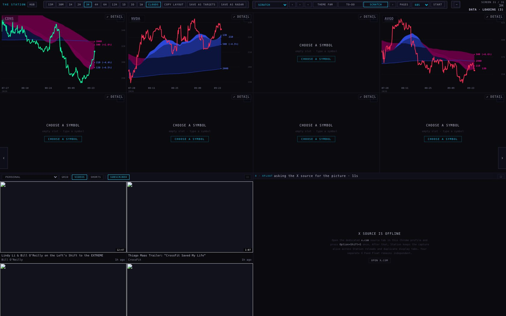
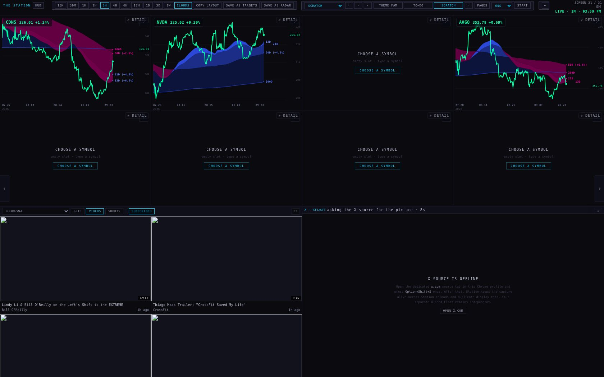
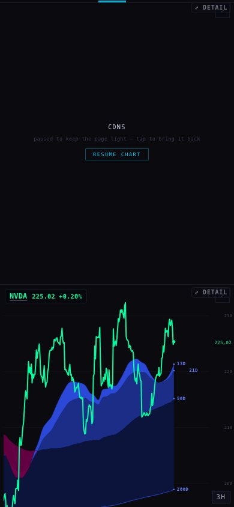
5 · THE GLITCH BETWEEN PAGES
How it was found: a headless browser at 1680×1050 rotated through two sets of workflow pages, two laps each, exactly as the Station's own timer does. Every frame the browser painted was recorded (not just one every 100 ms), along with the wall's layout and every message a chart sent. Set 1: TARGETS → SECTORS → SPY+QQQ → MAG 7 → AI 1 → AI 2. Set 2: BLUE CHIP → SPY+QQQ · DAY → OTHER INDEXES · DAY → MACRO · DAY → TARGETS · DAY → MACRO · 4H → INTRADAY · 4H. The same stored prices fed the before and after runs.
Checked with Chrome's own "paint holding" switched on. The test browser normally turns off a Chrome feature that holds the old picture on screen while a page reloads. Because that could have made the flash look worse than it is, set 1 was run again with the feature on, as in your Chrome. The flash is still there: empty chart frames on the second lap were 61 before → 29 after (first lap 126 → 131). Chrome's paint holding does not cover a chart frame reloading inside the page.
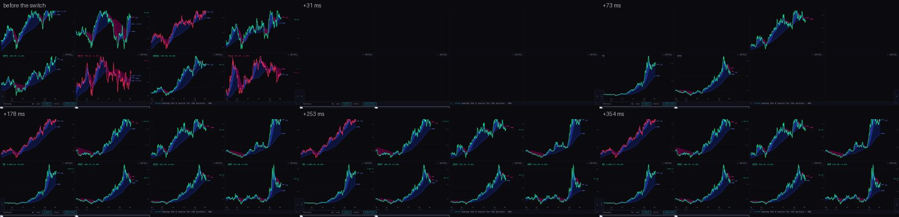
What flashed, named
- The whole wall went dark for about 150 ms on every page change, even when every chart was already stored in the browser. Cause: the Station gave each chart frame a new address, so all of them threw their page away at once and redrew from an empty page. Fixed: when only the symbol changes and its prices are stored, the frame keeps its page and switches symbol. It draws in the same instant, so no empty frame is ever painted. If a frame doesn't answer within 1.5 s, it reloads the old way.
- A new chart drew in one colour, then the other, when its price arrived (for example BTCUSD green at +160 ms, then red at +262 ms). Cause: its first paint judged the day from its own bars, then switched to the provider's previous close. Fixed for switched charts: the day's price is handed over before the symbol, so the first paint is already right.
- The old charts stretched for a frame when the number of charts changed (eight to two). Moving between the top and bottom rows forced a reload. Mostly fixed: a chart can now change rows without reloading. One frame (about 25 ms) remains: the wall resizes a moment before the charts hear about their new symbol.
- A new line under the old name. This one appeared in my first fix: for about 100 ms a TSM line sat under "MAGS 72.52". It was caught in the frames and fixed. The label now changes in the same instant as the line.
Not seen at all, before or after: a white or bright frame (0 in every run) and the timeframe chip jumping (0; it changes once, from the old timeframe to the new).
| page changes | empty chart frames | old chart still showing | colour flips | white frames | timeframe jumps | |
|---|---|---|---|---|---|---|
| page set 1, second lap (charts already stored) | 5 | 64 → 36 | 25 → 7 | 0 → 0 | 0 → 0 | 0 → 0 |
| page set 2, second lap (charts already stored) | 6 | 73 → 50 | 33 → 5 | 5 → 2 | 0 → 0 | 0 → 0 |
| page set 1, first lap (charts fetched the first time) | 6 | 143 → 129 | 8 → 7 | 1 → 0 | 0 → 0 | 0 → 0 |
| page set 2, first lap (charts fetched the first time) | 7 | 125 → 123 | 25 → 18 | 2 → 0 | 0 → 0 | 0 → 0 |
Read each cell as "before → after". "Empty chart frames" counts one chart pane on one painted frame, so eight panes dark for two frames counts 16. The first lap barely changes, and that is honest: a chart whose prices are not stored yet still has to load its page the old way.
Second lap, page by page
| to page | charts | empty chart frames | old chart showing | colour flips |
|---|---|---|---|---|
| sectors3D | 8 → 8 | 24 → 11 | 8 → 0 | 0 → 0 |
| mainIndexes3D | 8 → 2 | 2 → 1 | 2 → 0 | 0 → 0 |
| mag7 | 2 → 8 | 7 → 19 | 8 → 7 | 0 → 0 |
| ai1 | 8 → 8 | 15 → 0 | 7 → 0 | 0 → 0 |
| ai2 | 8 → 8 | 16 → 5 | 0 → 0 | 0 → 0 |
| spyQqq1D | 8 → 2 | 2 → 2 | 2 → 0 | 0 → 0 |
| otherIndexes1D | 2 → 6 | 17 → 16 | 6 → 2 | 0 → 2 |
| macro1D | 6 → 6 | 14 → 0 | 1 → 0 | 4 → 0 |
| targets1D | 6 → 8 | 10 → 5 | 13 → 2 | 0 → 0 |
| macroIntraday | 8 → 4 | 9 → 9 | 4 → 1 | 0 → 0 |
| intraday4h | 4 → 6 | 21 → 18 | 7 → 0 | 1 → 0 |
Frames: eight charts to eight charts (MAG 7 → AI 1), second lap
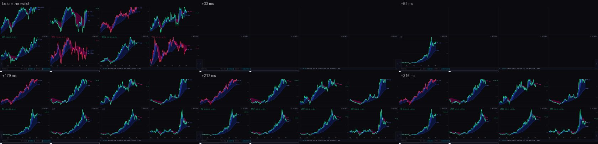
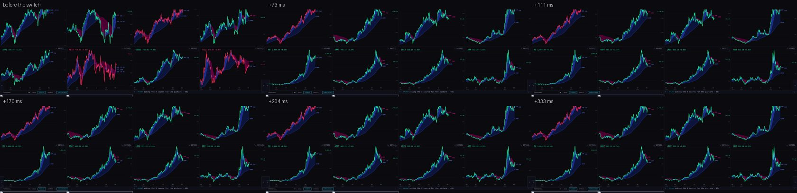
Frames: MACRO · DAY (six to six, daily), second lap
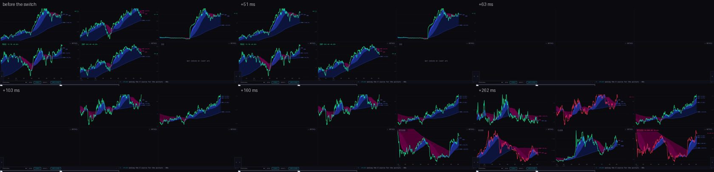
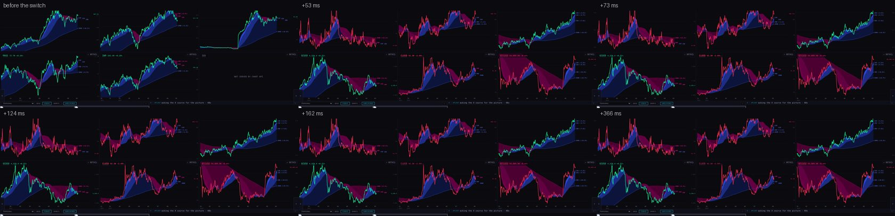
Frames: eight charts to two (SECTORS → SPY + QQQ)
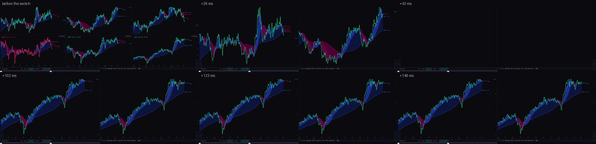
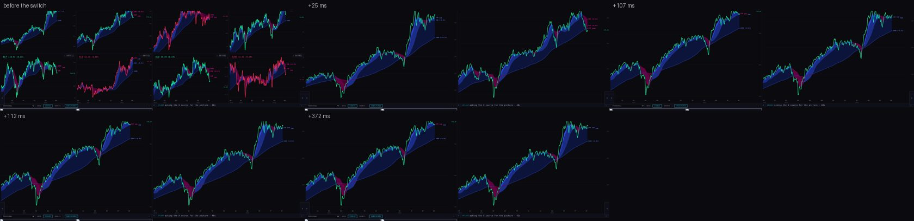
What is left: pages that grow (two charts to six)
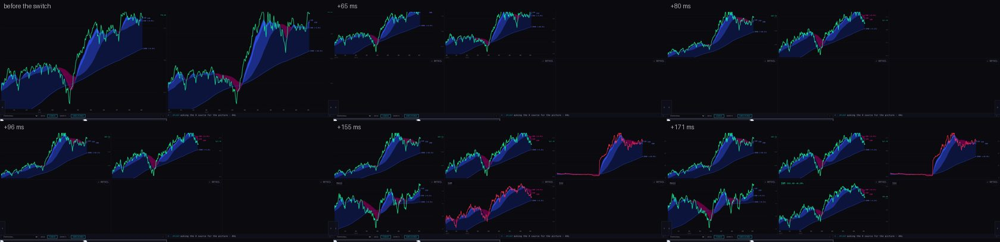
6 · CHARTS ONLY, ON THE LIVE STATION
Checked headlessly on station.scintillahub.ai (live) and on the branch, with the button and with the W key. The results were identical:
- normal: charts 554 px tall, video and X row 495 px;
- CHARTS ONLY on: charts 1050 of 1050 px, the whole wall. The video and X row is hidden (invisible, cannot be clicked) but not unloaded: the same video and X frames were still there, never reloaded, and the row keeps a real height (399 px) so X comes back as it was;
- W turns it off and on again, and it is remembered after a reload.
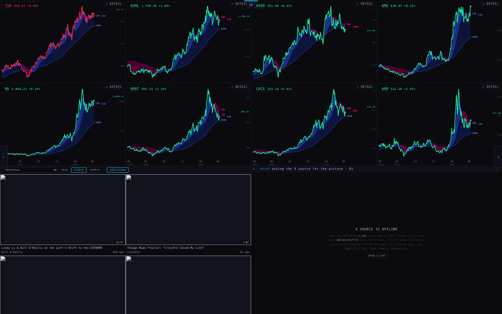
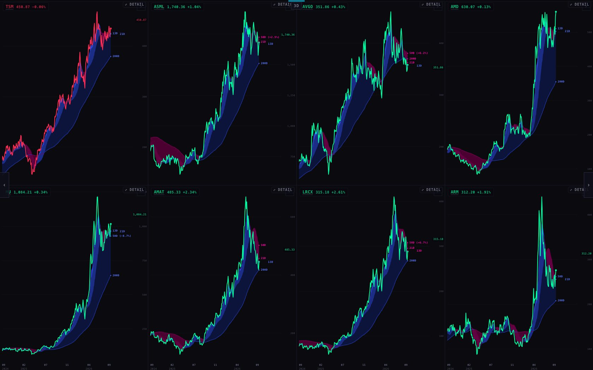
WHERE EACH NUMBER COMES FROM
- Chart prices: the chart API (
scintilla-massive-chart-api.fly.dev). That API only answersscintillahub.ai, so the harness re-asked it from outside the browser with that origin and handed the answer to the local page. The origin check was relaxed in this way, and only for reading. The answers were stored once, so before and after drew identical bars. - Quotes, targets and the ticker list: the live database, read-only. Every write the Station tried went to the harness instead, and none reached the live database.
- Frame counts: the browser's own list of painted frames plus a 50 ms record of the wall's layout, measured by a script that reads each chart pane's pixels (up = #00FFA3, down = #FF2D55).
- Session times: New York time from the browser's time-zone table, checked minute by minute across a whole day, in both summer and winter time, by the new tests.
WHAT COULD BE WRONG
- The shared table is not proven live.
station_listsexists and answers reads (checked: empty, 200). Saving needs a unique key on (list, position) and permission to write. Both come from the table's brief, but I did not test them, because I did not write to the live table. If either is missing, SCRATCH says "the shared save failed" and keeps the wall on the device. One test save by the coordinator settles it. - Holidays: there is no exchange-holiday calendar, so a weekday holiday runs the weekday sessions (intraday pages, SPY/QQQ at 09:30).
- Timing: measured in a headless browser on this MacBook with no graphics card. Real Chrome on your screens will paint at different moments. The ratio should hold, but not the exact milliseconds.
- Two changes to the chart page (the label repaint, and changing rows by message) are in both identical copies of the chart page, which are still identical. Both are covered by tests, not by a live session.
WHAT I DID NOT DO
- No push, no deploy, no database write, and no visible browser on your screen. Every browser was headless and closed afterwards.
- I did not keep hidden charts alive between pages (the remaining flash on growing pages), and did not change the phone's two-pane rule. Both are decisions below.
- I did not move the page arrow off the lower-left chart label.
- Pre-market is now a session of its own, but I did not add pre-market-specific pages. It rotates the same pages as the market session, with the futures leading.
DECISIONS FOR ALAN
- SAVE AS RADAR adds, and never replaces. Recommend: keep it that way. Also: the Hub's rule is that a RADAR name must also be "liked". Should SAVE AS RADAR also like the names, or leave that to the Hub? Recommend the Hub team does it, so the rule lives in one place.
- Keep hidden charts alive between pages so pages that grow (two to six, six to eight) stop flashing empty slots. It costs background price reads for charts you can't see. Recommend: yes on the desk Station, no on the phone.
- On a phone the first chart of every page is paused ("paused to keep the page light"), because the phone keeps two live panes and pauses the oldest. Recommend: pause from the bottom instead, so the chart at the top is always live.
Branch station/modes-20260925 · 7a2182c · base 5e6027d (live). Tests: see the return note.
Push when reviewed: git push origin station/modes-20260925.